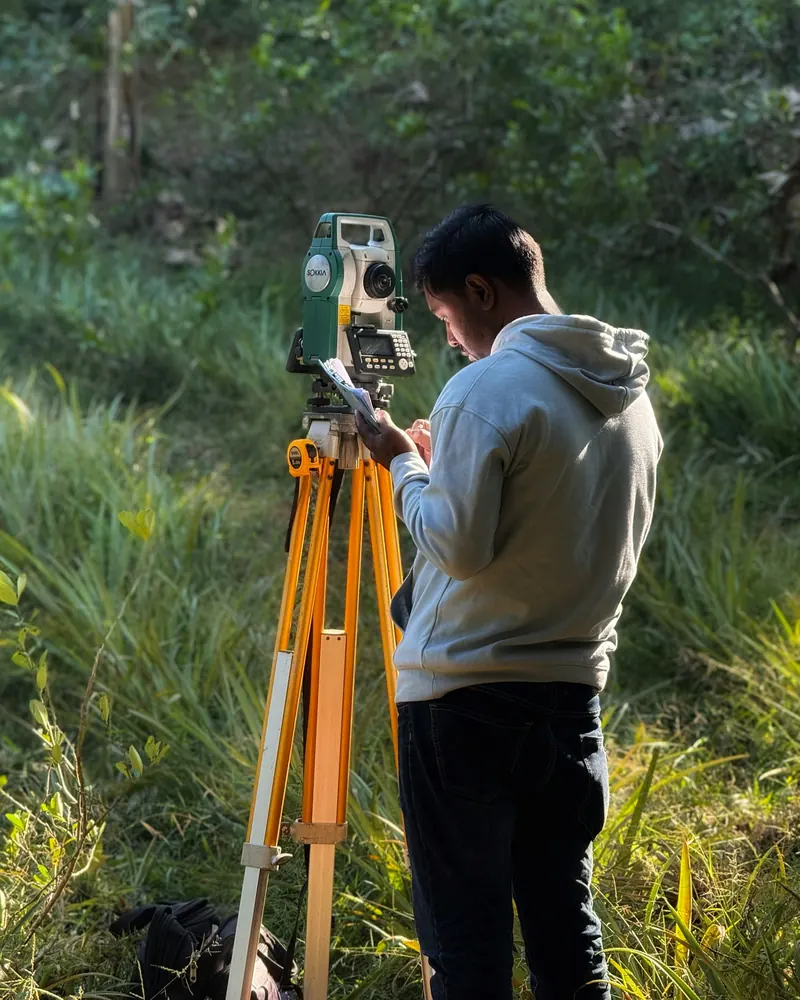
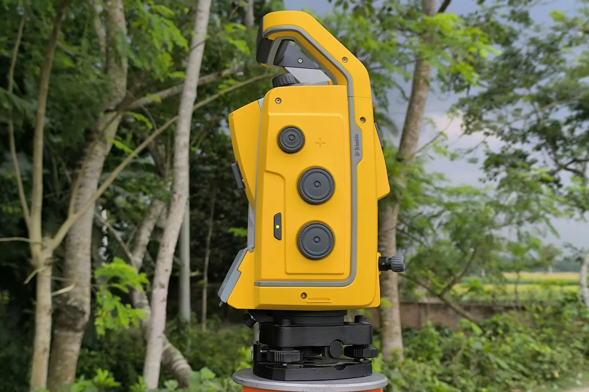

Geodeta w Limanowej
Usługi geodezyjne mgr inż. Piotra Libury: mapy do projektu, tyczenie budynków, inwentaryzacje, granice i podziały działek. Biuro w samym centrum, przy Rynku 5.

Na którym etapie jesteś?
Każdy etap budowy ma swoją geodezję. Wybierz, a pokażemy, czego potrzebujesz teraz.
Zanim podpiszesz akt, sprawdź granice i zgodność księgi wieczystej z ewidencją.
Projektant potrzebuje aktualnej mapy do celów projektowych. Czasem najpierw trzeba podzielić działkę.
Przed wbiciem łopaty dom trzeba wytyczyć na działce, a w trakcie warto skontrolować wymiary.
Na koniec inwentaryzacja powykonawcza budynku i przyłączy, potrzebna do odbioru.
Usługi
Szczegóły każdej usługi
Pomiar, opracowanie, ośrodek
Mierzymy w terenie, opracowujemy wyniki i przekazujemy je do powiatowego ośrodka dokumentacji geodezyjnej. Ty dostajesz gotowe dokumenty do projektanta, urzędu albo notariusza.
Jak wygląda współpraca